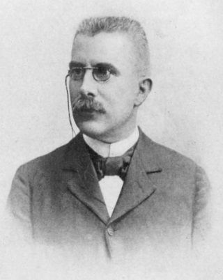

O princípio de Le Chatelier, um dos fundamentos essenciais da química, desempenha um papel crucial na compreensão do comportamento de sistemas em equilíbrio. Desenvolvido pelo químico francês Henri Louis Le Chatelier no final do século XIX, esse princípio fornece uma valiosa ferramenta para prever e compreender as respostas de sistemas químicos a mudanças externas. Em essência, o princípio de Le Chatelier afirma que, quando um sistema em equilíbrio é submetido a uma alteração externa, ele ajustará suas condições para minimizar o impacto dessa mudança, buscando um novo estado de equilíbrio.
A aplicação do princípio de Le Chatelier é evidente em várias indústrias químicas, onde o controle preciso do equilíbrio em reações é essencial. Por exemplo, ao considerar a produção de amônia, um importante componente de fertilizantes, o princípio de Le Chatelier orienta os engenheiros a ajustar fatores como temperatura e pressão para otimizar a produção. Compreender como as reações respondem a mudanças externas não apenas melhora a eficiência dos processos industriais, mas também destaca a relevância contínua do princípio de Le Chatelier no avanço da ciência e tecnologia.